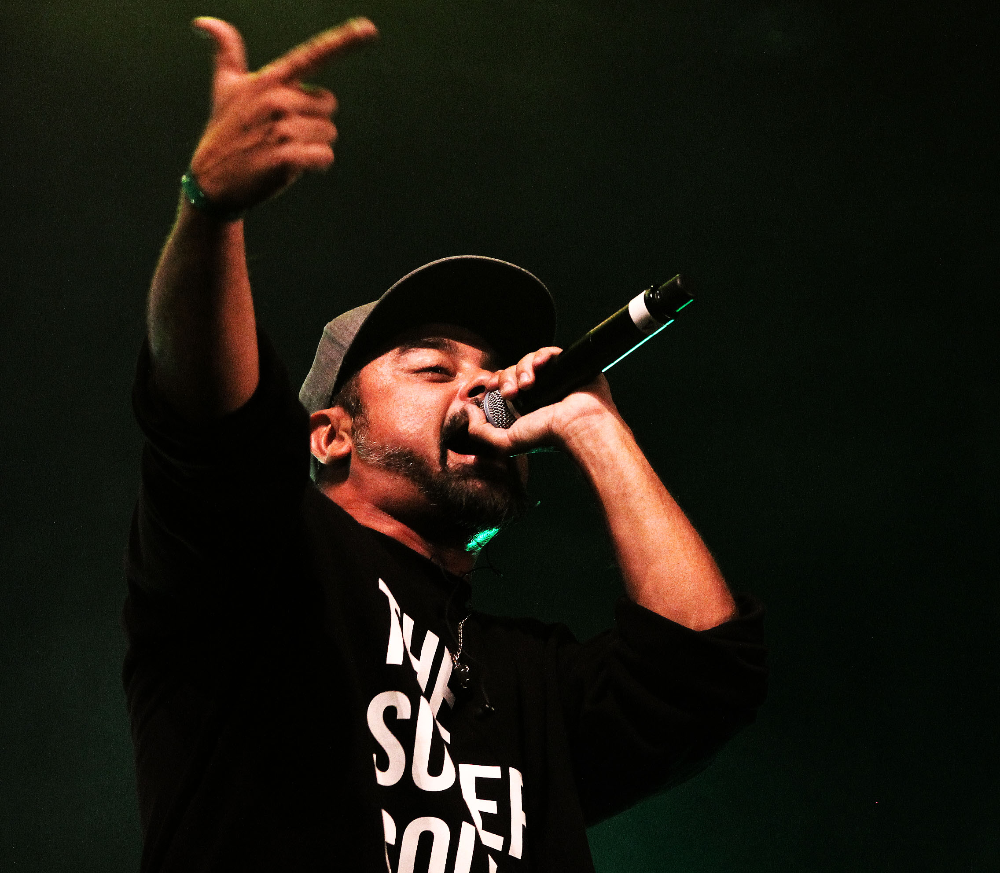

<!DOCTYPE html>
<html lang="en">
<head>
    <meta charset="UTF-8">
    <meta http-equiv="X-UA-Compatible" content="IE=edge">
    <meta name="viewport" content="width=device-width, initial-scale=1.0">
    <title>Las aventuras de Nach </title>
    <link rel="stylesheet" href="mis estilos.css">
    <body style="background-color: salmon;" >  </body>
</head>
<!-- <body style="background-color: salmon;"> -->
    <h1 style="text-align: center; color: rgb(216, 104, 25); font-size: 150px; background-color: rgb(252, 203, 198)"><br> 
        "Las aventuras de Nach."
        <br> 
        <br>
     </h1>
     <h1>  </h1>
    <h2 style="text-align: center; color: rgb(216, 104, 25); background-color: rgb(252, 203, 198)"
    >Autor: Mateo Alberto </h2>
    <h2 style="text-align: center; color: rgb(216, 104, 25);background-color: rgb(252, 203, 198)"> En esta versión del cuento puedes elegir cual será el camino que guie a Nach, elígelo con sabiduria.  </h2>

        
</html>

<h1 style="background-color: rgb(252, 203, 198); text-align: center;font-size: 65px;" >
<br>
<em>"Las aventuras de Nach"</em>
<br>
<br>
</h1>
<h1 style="background-color: rgb(252, 203, 198); text-align: center">
    <br>
La historia que está por ser relatada se remonta a los años 80's, el personaje principal de ella es Nach; un joven inteligente y amable cuya mayor motivacion en la vida era el R.A.P. <br>
En esos tiempos vivía con su madre en New York cerca del Central Park. <br>
<br>
<br>
</h1>
<br>
<h1 style="background-color: rgb(252, 203, 198); text-align: center;"> <em> Capítulo Uno: "La primer batalla" </em>


</h1>

<h1 style="background-color: rgb(196, 250, 241);text-align: justify;"> 
 <br>
    Una noche, de las mas heladas del mes de julio, Nach piensa: ¿que mierda quiero hacer con mi vida?,<br> pero pasó desapercibo el pensamiento cuando de repente un golpe rotundo se hacia oir.<br>
    Era su madre quien había azotado la puerta de su habitacion luego de tener lo que aparentemente era una discusión telefónica. <br>
    -Madre: ¿Acaso crees que no busco lo mejor para él? <br>
    -Persona al teléfono: ¿Buscar lo mejor para él significa dejarlo merodear sin que tenga un maldito rumbo?<br>
    *Golpe exagerado de la puerta*<br>
    Nach a quien ahora pasaremos a llamar N, estando en la entrada, luego de haber escuchado el golpe sale hacia la calle a ver que lo depara.<br>
    Camina unas cinco o seis cuadras hasta llegar a E 79th St y madison avenue cuando de lejos pudo percibir que un grupo de jóvenes estaban en ronda justo en la esquina.<br>
    Al principio, le dio curiosidad y miedo, entendible dado las circuntancias de no conocer a nadie pero a pesar de eso avanzó.<br>
    Al irse acercando fue escuchando varios sonidos y una voz pegada a ellos.<br>
    Ante N se presentaba lo que en primera instancia seria una batalla de rap.<br>
    Para él era algo nuevo y descabellante.
    Se fue acercando poco a poco hasta casi estar pegado al tumulto de gente.<br>
     aproximadamente unos diez minutos más tarde, se escucha a lo alto una voz grave nativa de NY: <br>¡Registration are open!<br>
    N tampoco es que sabia mucho ingles pero algo se manejaba,
    dedujo lo de las incripciones y no lo dudo mucho.
    Se anotó en lo que estaba por ser su primera batalla de rap.<br>
    Pasaron otros diez minutos y unas dos batallas hasta que la misma voz de la inscripciones mencionó: ¡VEDER versus Nach!<br>
    Era su momento, dió un paso al frente, y sintiendo los nervios recorrer entero su cuerpo. <br> <br>


</h1>

<h1 style="background-color: rgb(252, 203, 198);text-align: center;"> <br>
     <em> ¿Qué deseas que haga Nach una vez sentido los nervios?</em> <br><br>

</h1>
<h1 style="background-color: rgb(252, 203, 198);text-align: center;"> <br>
<a href="segunda opcion.html"> Opción A: </a> se mantiene en la batalla.
<br>
<br>
<a href="primer opcion.html" > Opción B: </a> se retira de la batalla.
<br> <br>
</h1>


